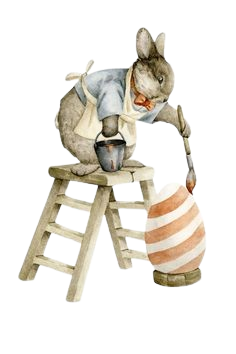
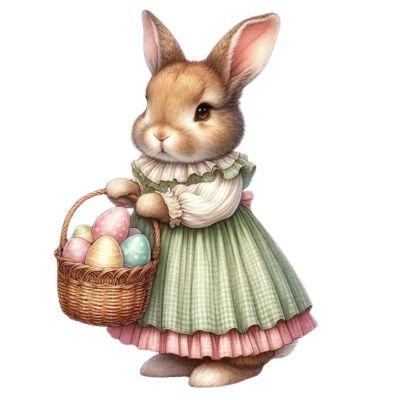
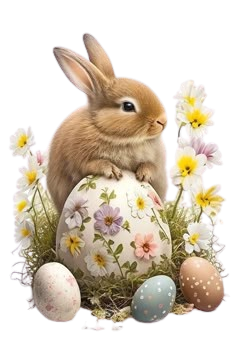
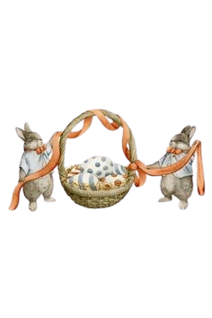
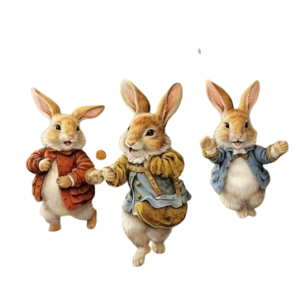

Pintura de Ovos de Páscoa
Ajude os coelhinhos a pintar ovos coloridos! Crie suas próprias obras de arte usando tintas e pincéis. A diversão é garantida!
Materiais: Ovos cozidos, tintas, pincéis, aventais.
Dicas: Use folhas e flores para criar estampas naturais nos ovos!
Caça aos Ovos de Páscoa
Participe da divertida caça aos ovos! Esconda os ovos em lugares estratégicos e convide seus amigos para encontrá-los.
Materiais: Ovos de chocolate, cestas, cartões de dicas.
Dicas: Faça uma lista de pistas para ajudar na busca!
Fabricação de Ovos de Chocolate
Venha aprender como os coelhinhos fazem deliciosos ovos de chocolate! Siga as receitas e crie suas próprias delícias.
Materiais: Chocolate derretido, formas de ovos, confeitos.
Dicas: Deixe a imaginação fluir e crie combinações saborosas!
Decoração de Cestas de Páscoa
Ajude a decorar lindas cestas para os ovos! Use fitas, flores e outros enfeites para deixar tudo mais bonito.
Materiais: Cestas, fitas coloridas, flores artificiais, adesivos.
Dicas: Crie um tema para a decoração e use sua criatividade!
Atividades de Jardinagem
Junte-se aos coelhinhos para plantar flores e criar um lindo jardim! Aprenda sobre diferentes tipos de flores e como cuidá-las.
Materiais: Sementes, terra, vasos, regador.
Dicas: Escolha flores coloridas para deixar o jardim mais alegre!